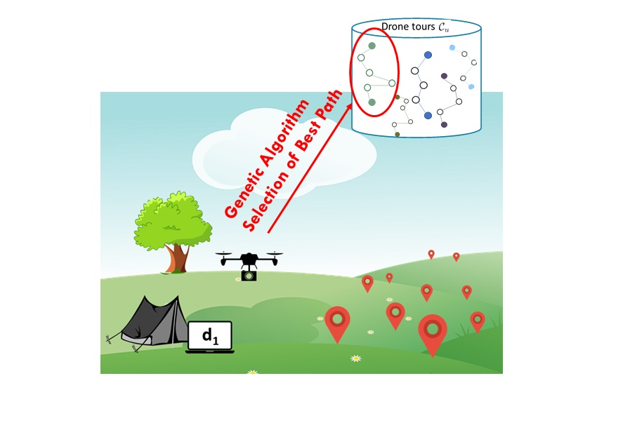

Pubblications
The Project Most Recent Pubblished Works
MAD for FANETs: Movement Assisted Delivery for Flying Ad-hoc Networks (PDF)
 We propose MAD (Movement
Assisted Delivery): a packet routing protocol specifically tailored
for networks of aerial vehicles. MAD enables adaptive selection
of the most suitable relay nodes for packet delivery, resorting
to movement-assisted delivery upon need, which is supported
by a reinforcement learning approach.
We propose MAD (Movement
Assisted Delivery): a packet routing protocol specifically tailored
for networks of aerial vehicles. MAD enables adaptive selection
of the most suitable relay nodes for packet delivery, resorting
to movement-assisted delivery upon need, which is supported
by a reinforcement learning approach.
Abstract - The fast and unconstrained mobility of Flying Ad-
hoc NETworks (FANETs) brings about the need to develop
solutions for packet routing in a highly dynamic topology
scenario. Previous works in this direction aim at extending
protocols designed for Mobile Ad-hoc NETworks (MANETs)
to the more challenging domain of FANETs. Unlike previous
approaches, we aim at exploiting the device controllable mobility
to facilitate network routing. We propose MAD (Movement
Assisted Delivery): a packet routing protocol specifically tailored
for networks of aerial vehicles. MAD enables adaptive selection
of the most suitable relay nodes for packet delivery, resorting
to movement-assisted delivery upon need, which is supported
by a reinforcement learning approach. By means of extensive
simulations we show that MAD outperforms previous solutions in
all the considered performance metrics including average packet
delay, delivery ratio, and communication overhead, at the expense
of a moderate loss in average device availability.
N. Bartolini, A. Coletta, A. Gennaro, G. Maselli, M. Prata - in IEEE Proceedings of the International Conference on Distributed Computing Systems (IEEE ICDCS 2021)
GenPath - A Genetic Multi Round Path Planning Algorithm for Aerial Vehicles (PDF)

We develop Gen-Path, a genetic algorithm for efficient scheduling of multi-round UAV missions,
under several objective functions. The algorithm selects the most efficient paths from a set of feasible trajectories.
Abstract -
The past few years have witnessed unprecedented
proliferation of Unmanned Aerial Vehicles (UAVs).
They are employed in a growing number of scenarios, from
parcel delivery to search and rescue operations, requiring coor-
dinated missions of a fleet of drones. Recently, there has been
growing interest in optimized techniques to assign tasks and
related trajectories to drones. While these techniques promise
high coverage of inspected area, their applicability in real
scenarios is precluded by unconsidered constraints. Among these,
the limited amount of power of UAVs, and the consequent need
of performing multiple trips to provide complete monitoring
coverage, with battery replacement/charging and data offloading
in between.
To address this problem we develop Gen-Path, a genetic
algorithm for efficient scheduling of multi-round UAV missions,
under several objective functions.
By means of simulations we show that Gen-Path fits various
scenarios, improving existing solutions in terms of covered points,
and energetic cost.